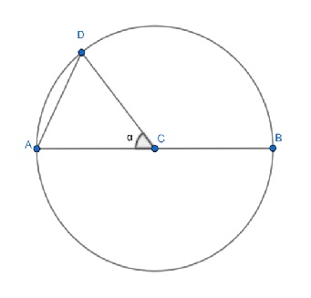
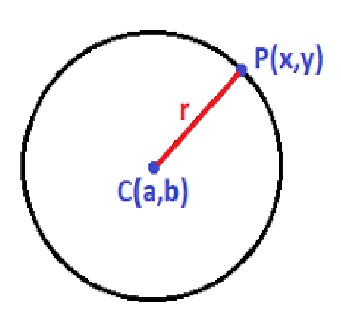

Por Nicol Rodriguez
La circunferencia es una figura geométrica plana y cerrada que se caracteriza porque todos los puntos que la conforman se encuentran a la misma distancia del centro. Dicha distancia permanente se denomina radio.
Elementos de la circunferencia:⦁ Centro(C): Es el punto que se encuentra a la misma distancia (es equidistante) de todos los puntos de la circunferencia.
⦁ Radio(CD): Es el segmento que une el centro de la circunferencia con cualquiera de sus puntos.
⦁ Diámetro(AB): Es el segmento que une dos puntos extremos de la circunferencia, pasando por el centro. Cabe notar que el diámetro el el doble del radio.
⦁ Cuerda(AD): Es el segmento que une dos puntos de la circunferencia, pero a diferencia del diámetro no pasa por el centro de la figura.
⦁ Arco: Es la curva que une los dos extremos de una cuerda, como la porción de la circunferencia de abajo que une los puntos A y D.
⦁ Ángulo central (α): Es el ángulo que se forma entre dos radios de la circunferencia.
⦁ Semicircunferencia: Es la porción de la circunferencia delimitada por dos extremos del diámetro.

Ecuación Canònica de la circunferencia
La circunferencia es el conjunto de puntos del plano que equidistan de un punto fijo llamado centro.Si tenemos una circunferencia de centro C(a,b) y de radio r y tomamos cualquier punto que pertenezca a la circunferencia:

El radio siempre va a ser la distancia entre el punto P de la circunferencia y el centro C:
d = (P,c) = r
Te recuerdo, que la fórmula para calcular la distancia entre dos puntos es la siguiente:

En nuestro caso, los dos puntos que tenemos son el punto P y el punto C :
P(x,y) C(a,b)
Sustituimos las coordenadas de ambos puntos en la fórmula:

Pasando la raíz como cuadrado al segundo miembro nos queda:

Para obtener la ecuación de la circunferencia, debemos conocer el centro y el radio y tan sólo debemos sustituir a y b por las coordenadas del centro y r por el valor del radio.
Por ejemplo, para obtener la ecuación de la circunferencia con centro en el origen y radio 5 sería, sustituimos en la fórmula anterior a y b por 0 y r por 5:

Operamos y nos queda:

La ecuación de la circunferencia con centro fuera del origen, por ejemplo con centro en C(5,4) y radio 3, la obtenemos sustituyendo «a» por 5, «b» por 4 y el radio por 3:

Ecuación General de la Circunferencia

Es una ecuación de dos variables x e y tal que los coeficientes de x2 y de y2 son iguales, y no tiene término en xy . El centro y el radio se pueden calcular de la siguiente manera:

Hallar la ecuación general de la circunferencia que tiene de radio 2 y de centro (1, -3) .

Ejercicios Resueltos
⦁ Calcular el centro y el radio de la circunferencia de ecuación x2 + y2 - 10x + 8y + 25 = 0 .

⦁ Escribir la ecuación de la circunferencia de centro (3,4) y radio r= 2. Sustituimos los valores en la ecuación

⦁ Calcula la ecuación de la circunferencia que tiene su centro en (2,-3) y es tangente al eje de abscisas.

A partir de la gráfica podemos deducir que

Ejercicios Propuestos
⦁ Para cada una de las siguientes circunferencias, halla las coordenadas de su centro y la longitud de su radio.

⦁ Calcula la ecuación general de la circunferencia de radio 5 cuyo centro está en el punto C (-1 , 2 ).
⦁ Cuáles de las siguientes ecuaciones son la ecuación de una circunferencia?

⦁ Determina la ecuación de la circunferencia que pasa por los siguientes tres puntos: A ( 0 , 0 ) B ( 4 , 0 ) C ( -2 , 2 )
⦁ Calcula la ecuación de la circunferencia que tiene su centro en (-1,4) y es tangente al eje de ordenadas.
⦁ Hallar la ecuación de la circunferencia concéntrica con la ecuación

y que pasa por el punto (-3,4)
Link relacionados con el tema
⦁ https://sites.google.com/site/geometriaanaliticageraferjenny/unidad-3
⦁ https://ekuatio.com/ecuacion-de-la-circunferencia/
⦁ https://www.superprof.es/diccionario/matematicas/geometria/circunferencia.html
⦁ https://aga.frba.utn.edu.ar/circunferencia/